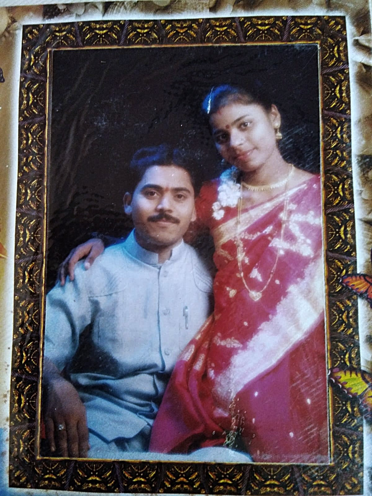
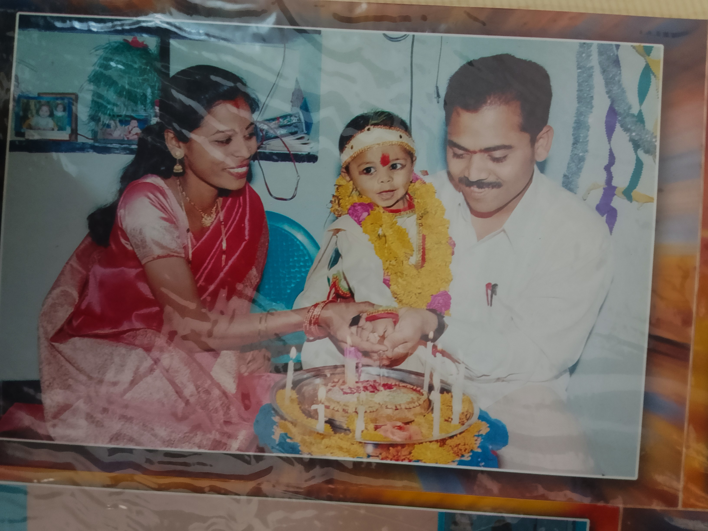
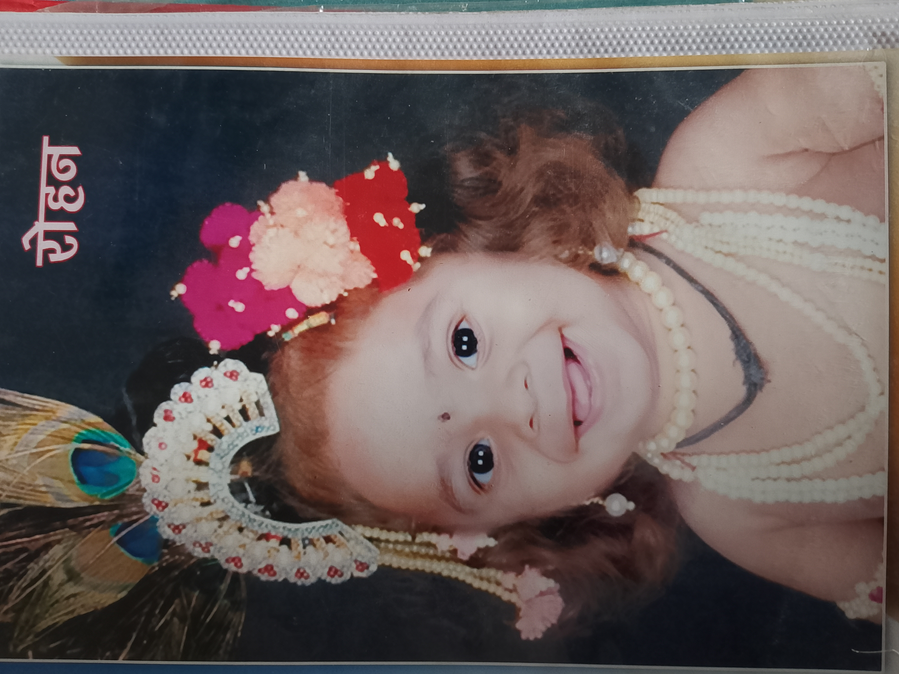
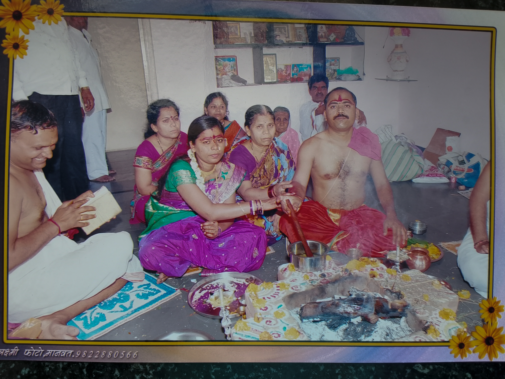
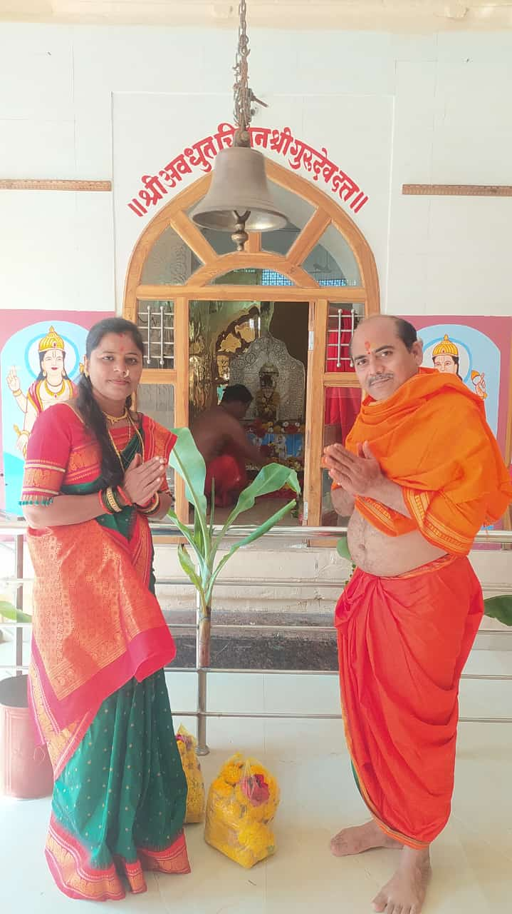
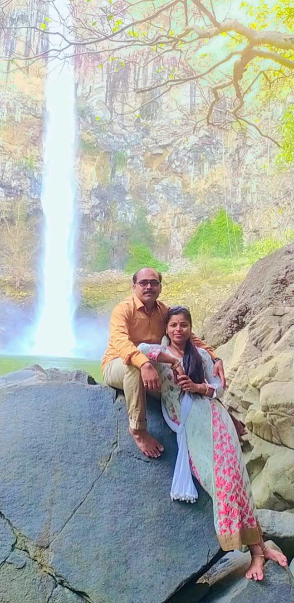
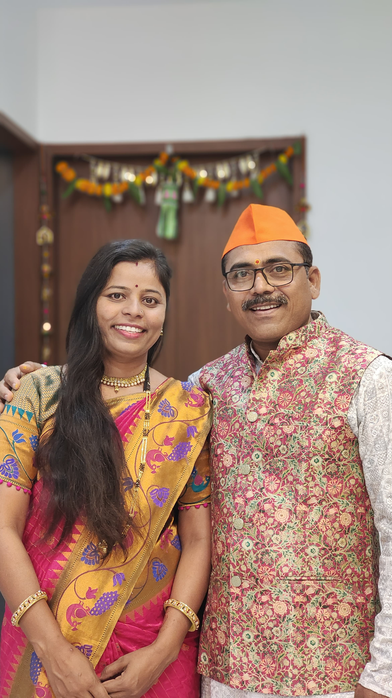

2003

Marriage
The day two lives became one
On 5 May 2003, Sharda and Gopal started their beautiful journey together, surrounded by rituals, blessings, and family love.
Celebrating 5 May 2003
Twenty-three years of love, faith, family, laughter, and memories that keep growing more precious.
For Mom & Dad
From wedding memories to family moments, temple visits, trips, festivals, and quiet smiles, this page gathers their journey in one warm place.
Memory Timeline

On 5 May 2003, Sharda and Gopal started their beautiful journey together, surrounded by rituals, blessings, and family love.

On 19th april 2005 a baby boy was born in this family, Rajat. He is the elder son in the family

Just after 2 years of Rajat's birth, on 7th april 2007 second baby boy was born in the family, Rohan.

Their marriage began with sacred traditions and the support of loved ones, creating a foundation that still feels strong today.

Their journey has always carried blessings, devotion, and gratitude through temple visits, rituals, and family traditions.

From waterfalls to family outings, their photos show a pair that keeps finding joy in new places and shared experiences.

After 23 years, their smiles tell the story best: love that stayed, grew, and became the heart of the family.
Photo Album
A smile that says everything
With Love
Dear Sharda and Gopal, your love has given this family strength, comfort, and countless memories. May your anniversary be filled with happiness, blessings, and many more years of togetherness.
Thank you for your support, love, and care. Today, whatever we are is because of your struggles, sacrifices, and the discipline you instilled in us. We will always be indebted to you. Your unwavering dedication has shaped us into who we are, and no words could ever fully express our gratitude. You are, and will always remain, our greatest inspiration.
May your bond keep growing stronger with every passing year.